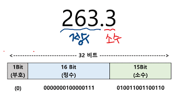
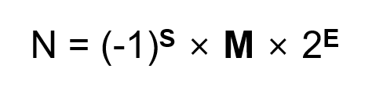
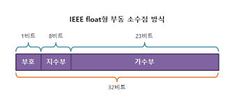

자료형
자료형? 생소한 단어일 수 있어. 자료가 뭘까? 보통 자료라고 하면은 연구나 조사할 때 쓰이는 단어잖아. 컴퓨터에는 어떤 의미일까
이 자료를 영어로 바꾸면 확 와닿을텐데 영어로는 데이터(Data) 가 바로 자료야.
컴퓨터와 데이터는 굉장히 밀접한 관계가 있어.
내가 이렇게 쓰고 있는 글자도 데이터이고, 숫자도 데이터이고, 컴퓨터에 저장된 사진, 영상, 프로그램들 모두 데이터야.
프로그래밍이라는 것도 결국 자료(데이터)를 다루는 작업에 불과하다고 할 수 있어.
그리고 그러한 자료들을 분류한것이 자료형이라고 할 수 있어.
프로그래밍을 할 때는 이 자료형이 굉장히 중요해. 프로그래밍언어마다 다룰 수 있는 자료형이 있거든.
그럼 파이썬에는 어떤 자료형이 있는 지 볼까?
파이썬에서는 어떤 자료형인지 알려면 type 이라는 함수를 사용하면 되는데
잠깐! 함수가 뭔지 모르겠다고? 일단 어렵게 생각하지 말고 지금은 type 을 그냥 자료를 넣으면 자료형을 알려주는 친구라고 생각하자
type(123) # 'int'
type(0.1) # 'float'
type("abc") # 'str'
type(True) # 'bool'
type([]) # 'list'
type({}) # 'dict'
type(()) # 'tuple'
type({0}) # 'set'
type(None) # 'NoneType'
type(bin) # 'builtin_function_or_method'
정말 많지? 이 외에도 자료형은 사용자 정의 자료형이 있기 때문에 사실상 자료형의 종류는 무한하다! 고 할 수 있어.
그러면 이 많은 자료형을 다 알아야하냐고?
어차피 프로그래밍하다보면 다 알게 되있어. (¬_¬ )
우리는 막 시작한 입장이니까 많이 쓰이는 자료형부터 알아보자.
대부분의 프로그래밍 언어에서 int(정수), float(부동소수), str(문자열), bool(불린), list(리스트) 자료형은 다 가지고 있다고 보면 돼.
int(정수)
첫 번째로 int 자료형은 프로그래밍의 가장 기본인 수를 다루는 자료형이야. 수끼리 더하고 빼고 곱하고 나누는 것을 할 수 있고, 크기 비교, 값 체크 같은 아주 기본적인 것들을 할 수 있어.
수학에서의 정수처럼, 음의 정수, 0, 양의 정수를 표현해.
하지만 표현할 수 있는 수의 크기에 제약이 있는 경우가 많아.
왜냐하면 컴퓨터의 저장 단위가 bit 잖아? bit 는 0과 1를 표현하는 단위이고,
이 8bit 가 1byte 가 되고 1024byte 가 1kb 가 되고 1024kb 가 1mb 가 되고 1024mb 가 1gb 가 되고...
이 때 정수에 몇 bit 를 할당하냐에 따라서 표현할 수 있는 수의 범위가 달라지게 되는 거지.
예를 들어 정수에 8bit 를 할당하면 2의 8승인 256가지 경우를 표현 할 수 있으니 음의 정수는 빼고 센다고해도 0 부터 표현하면 0~255 의 수를 표현할 수 있겠지.
c언어 같은 경우 int 자료형에 32bit 를 할당하여 2의 32승인 약 42 억의 경우를 표현 할 수 있어.
그래서 c언어 같은 경우는 -21억 ~ 21억 까지의 수를 int 형으로 표현할 수 있어.
그 외에 c언어에는 정수를 표현하는 많은 자료형이 있는데 그건 나중에 알아보자!
한 편 파이썬은 큰 수를 표현 할 때 추가적으로 bit 를 할당하기 때문에 수의 크기에 제약이 없는 걸로 알고 있어.
이건 파이썬의 장점이라고 할 수 있지.
float(부동소수)
수학에서 흔히 말하는 소수를 표현하는 자료형이야. 예를 들어 1/2 를 계산한다고 할 때, 정수형을 계산하면 0 이라는 답을 얻게 되지만 ( 정수 연산은 소수점이하는 버림 )
1/2 를 부동소수를 이용해 계산하면 0.5 라는 답을 얻을 수 있어.
그런데 부동소수라는 명칭은 어디서 온걸까?
컴퓨터에서 한정된 공간안에 소수를 표현하기 위한 여러가지 방법들이 연구되었는데
만약 소수를 표현하기 위해서 위 사진과 같은 방식을 사용했다고 하자.
32bit 안에 소수를 표현하기 위해서 16bit는 정수부를 위해 사용하고 15bit 는 소수부를 위해서 사용하는 거야. 나머지 1bit 는 부호용으로 빼놓고 말이지.
그러면 정수부가 표현할 수 있는 범위는 2의 16승인 0~ 65536 까지 정수부가 표현될 것이고,
소수부는 1/2, 1/4, 1/8, 1/16, ..., 1/32768 의 조합으로 표현가능할테니까
약 소수점 이하 5자리 까지 표현 할 수 있겠네. 이러한 방식의 단점은 정수부의 표현범위가 너무 작은 것이 단점이야.
 이번엔 위 사진과 같은 방법을 이용해서 소수를 표현해보자.
소수를 지수부와 가수부로 나누어 정규화시켜서 그걸 표현하는 방식인데
예를 들어, 123456.4456 이라는 소수가 있었으면 1.234564456 * (10^5) 이렇게 나눈 다음에 가수부 0.234564456 , 지수부 5 이렇게 나누는 거지.
지수를 표현하는데 8bit 를 쓰면, -128 ~ 128 까지 지수를 표현 할수 있고, 가수부에도 23비트를 할당해서 소수점이하 7자리 정도까지 정밀하게 표현 할 수 있게 되었어.
지수의 특징상 적은 bit 를 할당해도 승수기 때문에 큰 수도 표현할 수 있지.
하지만 큰 수를 표현하기 위해서 부동소수 연산에는 항상 오차가 수반되게 되었어.
예를 들어 아래 코드를 보자.
# 부동소수점의 오차
a = 1/20586
b = 20586
print(a*b)
# 0.9999999999999999 이 출력된다.
1 을 20586 으로 나눈 다음에 20586 을 곱했는데 결과가 1이 아니야.
하지만 1이라고 볼 수 있을 만큼 1에 가까운 값이지?
이렇듯 부동소수점 계산에는 약간의 오차 ( 10의 -16승 정도? ) 가 수반된다는 것을 기억하자.
부동소수점이라는 명칭은 소수를 정규화 할 때, 소수점이 맨앞으로 움직여서 소수점이 둥둥 떠다닌 다는 의미에서 부동소수점 이라는 용어롤 같게 되있어.
어려울 수 있는 내용이기 때문에 부동소수점위키백과나 구글검색등을 활용하길 바라.
str(문자열)
문자열 또한 중요한 자료형이야.
# 문자열
s = "가나다라"
print(s)
# s 의 자료형은 str 이다.
프로그램을 사용할 때 문자없이 숫자만 있으면 아주 불편할거야.
그래서 문자를 표현할 수 있는 자료형이 준비되어 있어 바로 'str' 데이터타입이야.
문자열 이라는 표현은 문자들의 나열 이기 때문에 문자열이라는 이름을 같게 되었어.
이 문자열타입을 이용하면, 문자열안에 있는 단어를 찾기나, 문자열이어 붙이기 같은 연산을 할 수 있고.
만들게 될 프로그램의 적재적소에 문자들을 배치할 수 있어.
나중에 문자열관련해서 여러가지 연산을 하게 될텐데 그 때 왜 문자열을 문자들의 집합이라고 표현했는지 알게될거야!
bool(불린)
불린 자료형은 참/거짓 을 표현하기 위한 자료형이야. 불린형은 나중에 조건제어를 이용하게 될 때 진정한 필요를 알게 돼.
프로그래밍 이라는 것이 결국에는 여러 조건에 따라서 행동들을 제어하기 때문에 불린 자료형 또한 중요하다고 할 수 있어.
관련된 연산으로는 AND OR NOT 과 같은 논리 연산들을 할 수 있어. 아래는 간단한 예시야.
# 불린타입
print(True and False)
print(True or False)
print(not True)
print(not False)
list(리스트)
자 이제 마지막으로 list 자료형이야.
list 혹은 array 우리말로하면 배열이라고 부르는데,
(( 마치 기차의 칸들이 줄줄이 이어져 있는 것처럼 ))
변수들이 줄줄이 이어져 있다고 생각하면 돼.
변수는 이름이 있는 상자라고 했지? 그 상자에는 값이라는 것이 들어있고,
그러한 상자의 묶음을 배열이라고 할 수 있겠어. 바로 예시를 들어보자.
# 리스트타입
arr = [1, 2, 3, 4, 5]
print(arr[0]) # 1 이 출력
print(arr[1]) # 2 가 출력
print(arr[2]) # 3 이 출력
print(arr[3]) # 4 가 출력
print(arr[4]) # 5 가 출력
arr[x] 라고 쓰게 되면 arr 배열의 x+1 번째 변수에 접근하는 거야.
arr[0], arr[1], arr[2], arr[3], arr[4] 각각을 모두 변수라고 생각하고,
그 안에 1,2,3,4,5 라는 값이 들어있다고 생각해봐.
예를 들어 a=1, b=2, c=3, d=4, e=5 라고 해놓고
print(a)
print(b)
print(c)
print(d)
print(e)
라고 써있는 것과 완전히 같은 상황이라고 볼 수 있겠어.
그렇다면 변수를 5개 사용하면 되는데 왜 배열을 사용하냐고?
컴퓨터는 굉장히 방대한 양의 데이터를 다루는 일이 자주 있어.
예를 들면 10만개 100만개 의 데이터를 처리할 수도 있지.
그런 상황에서 100만개의 변수를 쓰기에 너무 귀찮으니까
비슷한 자료들을 배열로 묶어서 일괄적으로 처리하는 거지.
이 배열의 활용은 다음에 반복문을 배우게 되면 그 진가를 드러낼거야!
정리
- 자료(데이터) 에는 형(타입) 이 있고 그것을 자료형(데이터 타입) 이라고 한다.
- 대부분의 언어는 공통적으로 int, float, str, list, boolean 자료형을 가진다.
- 사용자가 자료형을 직접 정의 할 수도 있기 때문에 자료형의 종류는 무한하다.